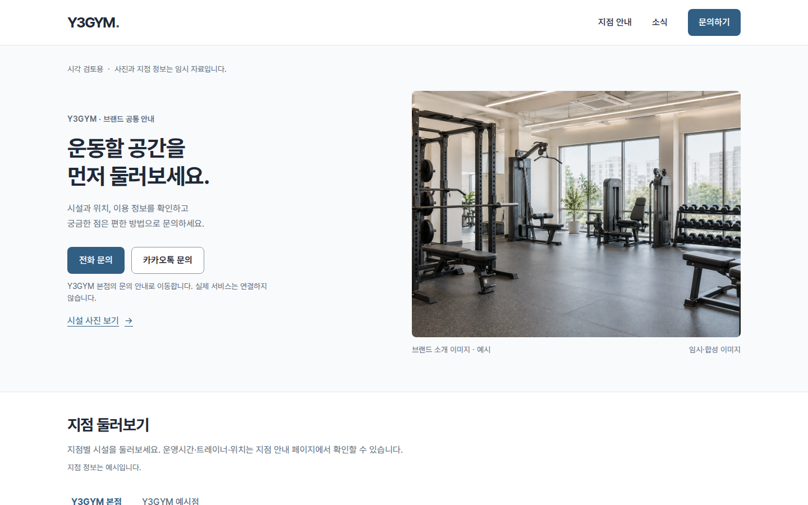
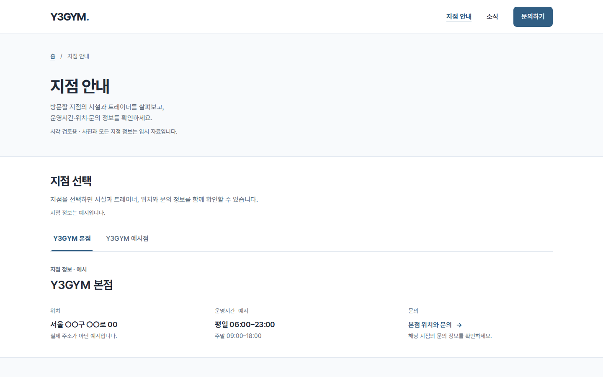
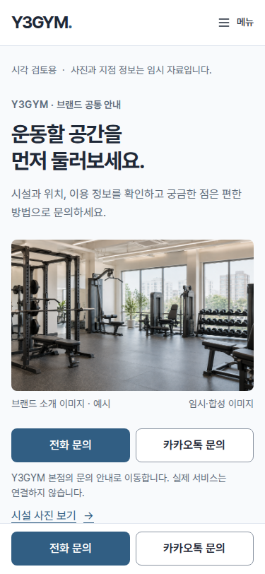
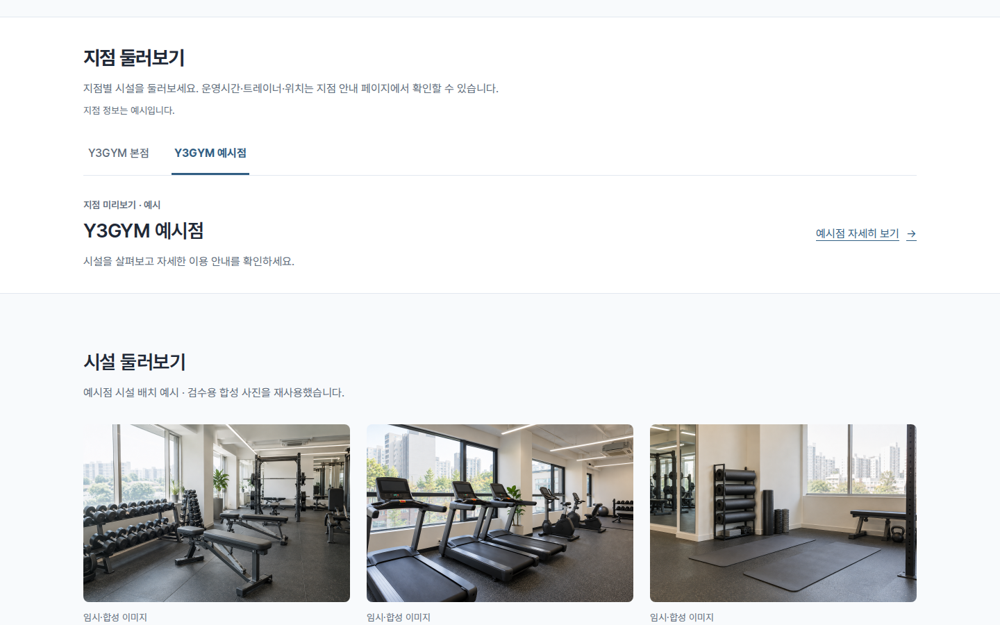
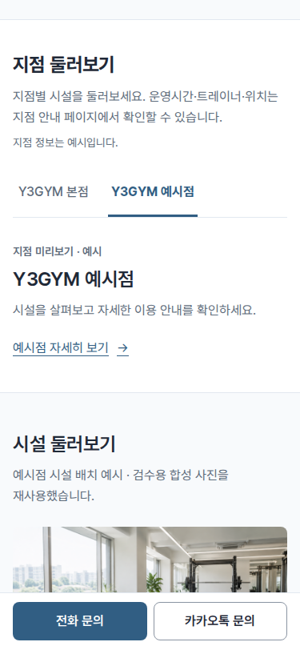

홈과 지점 안내를 나눴습니다.
아래 캡처는 이전 분리 화면의 이력입니다. 후속 요청으로 홈의 지점·시설을 한 구역의 사진 슬라이드로 합쳤습니다.
승인받은 A 방향과 지점 탭 배치를 유지했습니다. 홈에는 지점·시설 미리보기와 공통 소식을 남기고, 지점별 운영시간·트레이너·위치·문의 상세는 별도 페이지에 모았습니다.
- 상단 ‘지점 안내’는 같은 탭의 새 페이지로 이동합니다. 트레이너 독립 메뉴는 헤더와 푸터에서 제거했습니다.
- 홈에서 예시점을 선택한 뒤 지점 안내·자세히 보기·문의로 이동하면 예시점이 이어집니다. 홈으로 돌아올 때도 선택을 유지합니다.
- 모바일 문의 바와 소식 글·팝업의 문의 링크도 선택한 지점의 상세 안내로 연결했습니다.
- 기본 예시는 본점·예시점 두 지점이며 모든 사진·이름·운영 정보는 임시 예시입니다. 실제 문의·지도 서비스는 연결하지 않았습니다.
아래는 실제 Chromium 캡처입니다. 자동 검사는 사용자 시각 승인을 대신하지 않습니다. 홈의 정보량과 별도 페이지의 구성을 확인해주세요.
PC 첫 화면 · 1440×900




모바일 첫 화면 · 375×812



홈의 지점 미리보기 · 예시점




전체 캡처
| 화면 | PC · 1440px | 모바일 · 375px |
|---|---|---|
| 홈 · 본점 | 전체 보기 | 전체 보기 |
| 홈 · 예시점 | 전체 보기 | 전체 보기 |
| 지점 안내 · 본점 | 전체 보기 | 전체 보기 |
| 지점 안내 · 예시점 | 전체 보기 | 전체 보기 |


전체 캡처는 같은 폭의 긴 뷰포트로 촬영해 고정 문의 바를 맨 아래에 표시합니다. 본문 가림은 실제 375×812 화면 높이에서 별도로 검사했습니다.